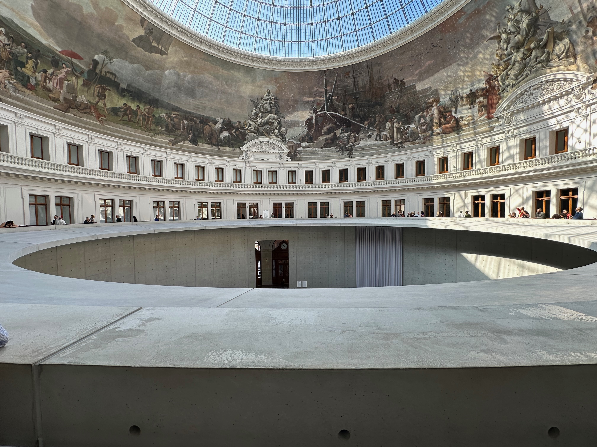
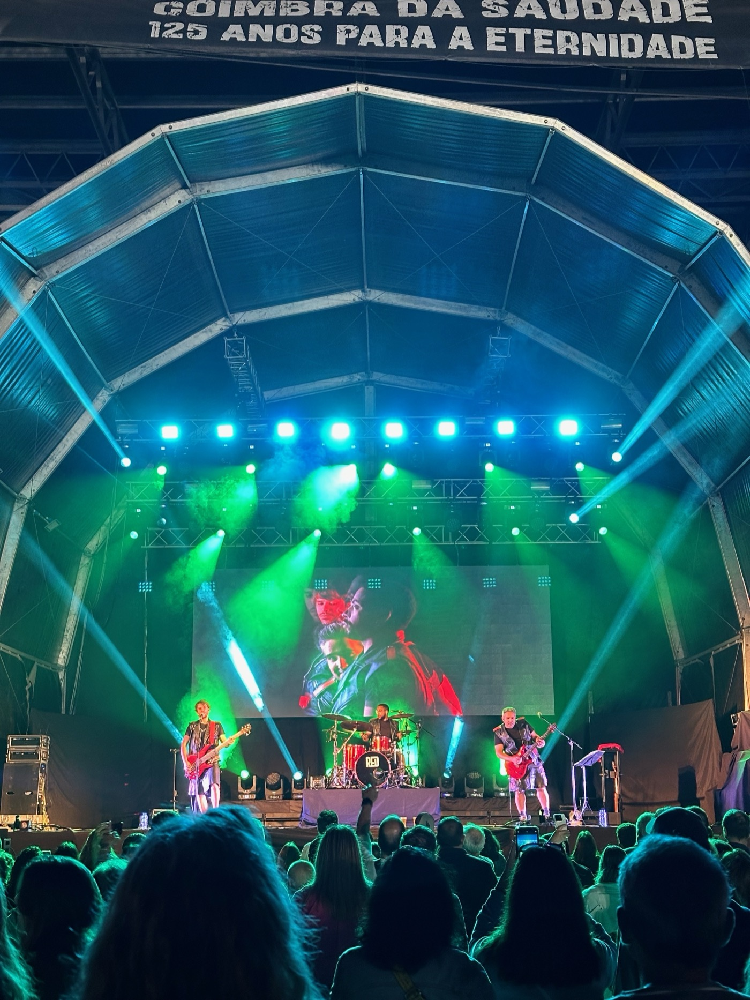
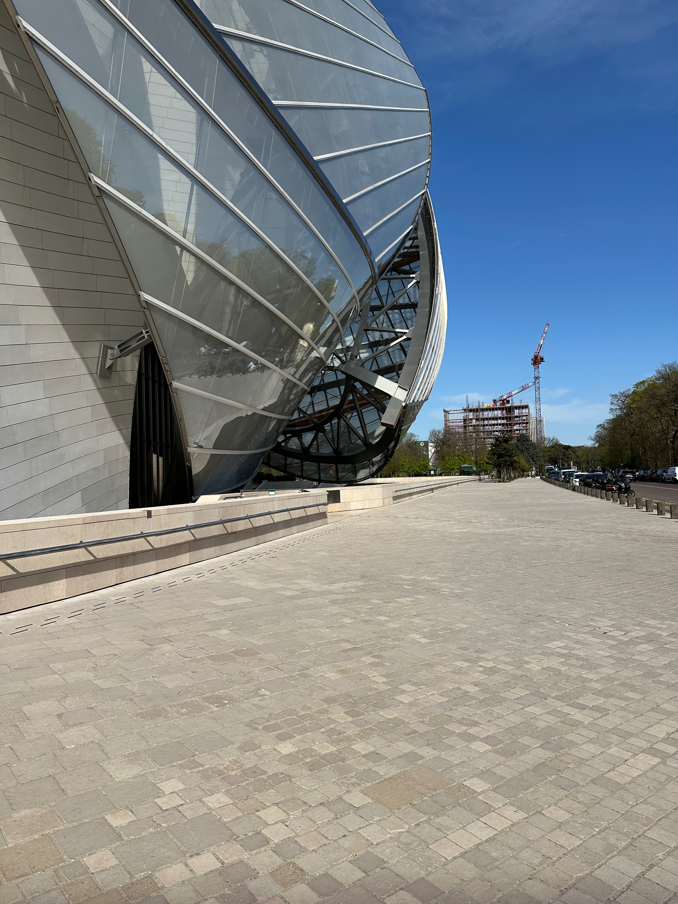

Project / Culture + Housing
Lantern Courtyard Archive

Lantern Courtyard Archive preserves neighborhood stories by combining exhibition rooms, shared kitchens, and workshop spaces inside a cluster of reused courtyard buildings.
Intent
The project asks how local heritage can stay alive without becoming static. Instead of treating memory as something to be viewed from a distance, the archive is built around participation: cooking, making, reading, and contributing stories over time.
The existing domestic scale of the compound becomes an asset. Rooms remain small enough to feel personal, while the courtyard binds them together into a shared civic sequence.
Program
One wing houses a rotating local archive, another offers workshop rooms and recording booths, and a third contains a communal kitchen where oral history sessions can happen informally around food. The circulation is deliberately porous, making chance encounters part of the experience.
Lighting, joinery, and signage are kept restrained so the architecture remains in service of the stories rather than competing with them.


Relevance
The project shows that cultural preservation can be spatially generous when it includes everyday rituals, not only displays. In this sense, the archive becomes a neighborhood room rather than a closed institution.
Its strongest quality is that it feels inhabitable. Memory is not frozen; it is rehearsed and refreshed through use.